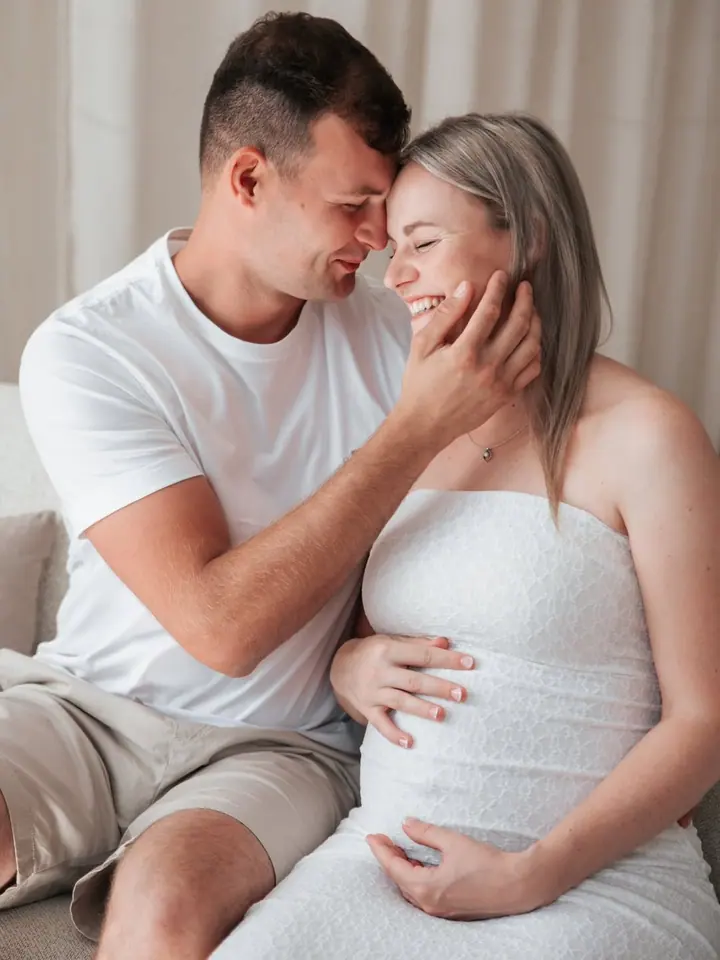
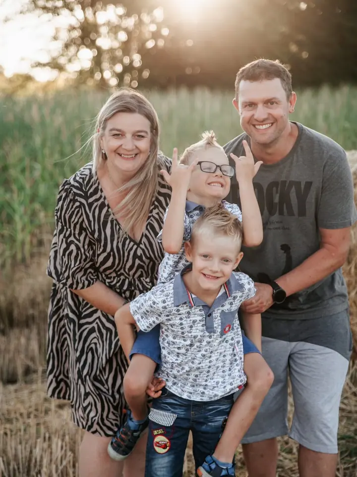
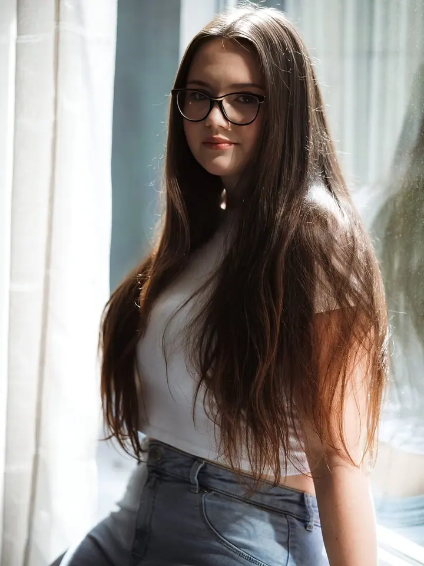

Newborn focení
Jemné a klidné focení novorozených miminek v ateliéru. V přirozeném světle a jemných barvách, aby fotky měly duši.

Jmenuji se Lenka Miláčková a fotím miminka, rodiny a budoucí maminky v Ledči nad Sázavou a po celé Vysočině. Miluji přirozené světlo, jemné barvy a fotografie, ke kterým…
Rezervovat termínJsem fotografka, manželka a maminka tří dětí. Fotografii se věnuji více než 12 let a pořád mě fascinuje, kolik emocí se dá zachytit během jediného okamžiku. Miluji opravdové příběhy, které stojí za to uchovat.


Vím, že spousta lidí přichází na focení s obavou, že nejsou fotogeničtí nebo se neumí tvářit před objektivem. Proto je pro mě nejdůležitější vytvořit atmosféru, ve které se budete cítit příjemně a sami sebou. Pózovat umět nemusíte, tím vás provedu.
Nejsem fotografka, která vám jen řekne, kam si stoupnout. Chci, abyste si z focení odnesli příjemný zážitek a fotky plné emocí. Největší odměnou je pro mě, když mi pak napíšete, že focení předčilo vaše očekávání.
Co fotím
Jemné a klidné focení novorozených miminek v ateliéru. V přirozeném světle a jemných barvách, aby fotky měly duši.
Přirozené focení celé rodiny, od nejmenších po prarodiče. Nemusíte umět pózovat, provedu vás tím.
Vzpomínka na čas čekání na miminko, sama nebo s partnerem. V ateliéru i venku, v klidu a bez spěchu.
Fotím i svatby, s důrazem na opravdové příběhy a emoce, které stojí za to uchovat.
Postup
Napište mi, o jaké focení máte zájem. Společně vybereme balíček a domluvíme termín, který vám bude vyhovovat.
Probereme místo focení, ateliér nebo přírodu, a vše, co vás před focením zajímá. Nemusíte se ničeho bát.
Fotíme v klidu a bez spěchu. Kam si stoupnout a co dělat s rukama, vám poradím, vy si jen užívejte společný čas.
Fotky pečlivě vyberu a upravím v jemných, přirozených barvách. Termín dodání najdete v mých obchodních podmínkách.
Otázky
Vůbec ne. S touhle obavou přichází spousta lidí. Celým focením vás provedu a postarám se, abyste se cítili příjemně a sami sebou.
Nejlépe ještě v těhotenství. Předběžně si domluvíme termín a po narození miminka ho spolu doladíme.
Fotím ve svém ateliéru v Ledči nad Sázavou i venku v přírodě na Vysočině. Místo vybereme podle typu focení a vašich přání.
Ceny jednotlivých balíčků najdete v ceníku na webu, informace o průběhu focení a době dodání v obchodních podmínkách.